Project: CarCar
Click to explore the code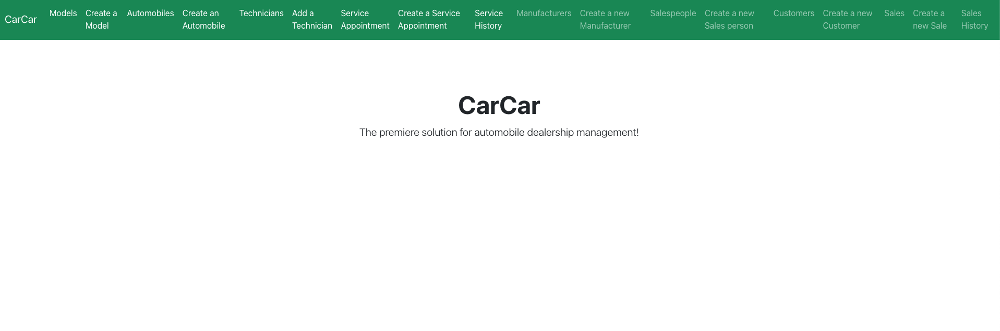
the premiere solution for automobile dealership management!
Breaking down the features:
after greeting with the home page, the user can start by creating the manufacturer of the vehicle. after the creation, you can see all the manufacturers you have created listed in the manufacturers list
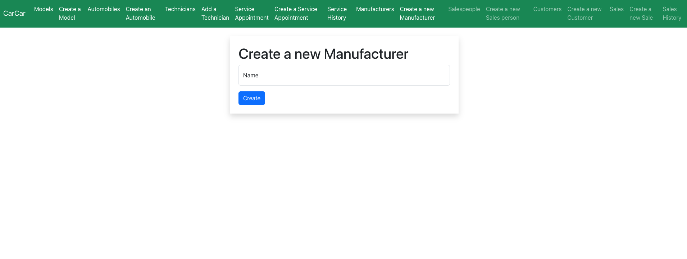 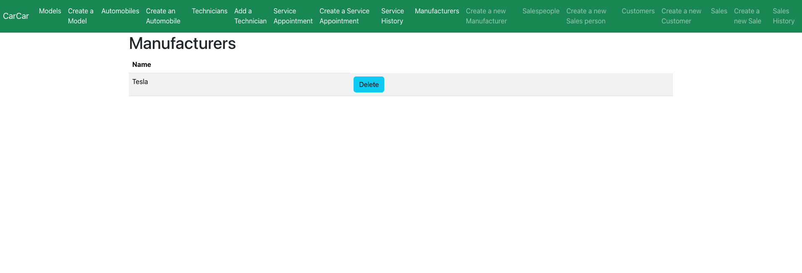after the manufacturer is created, proceed to set up the car model, created car models will be shown in the model list. The models created will be listed for view
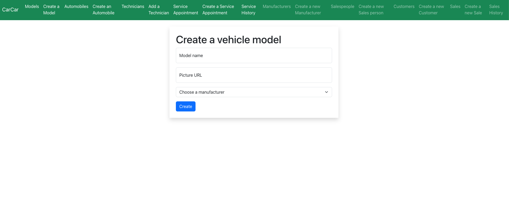 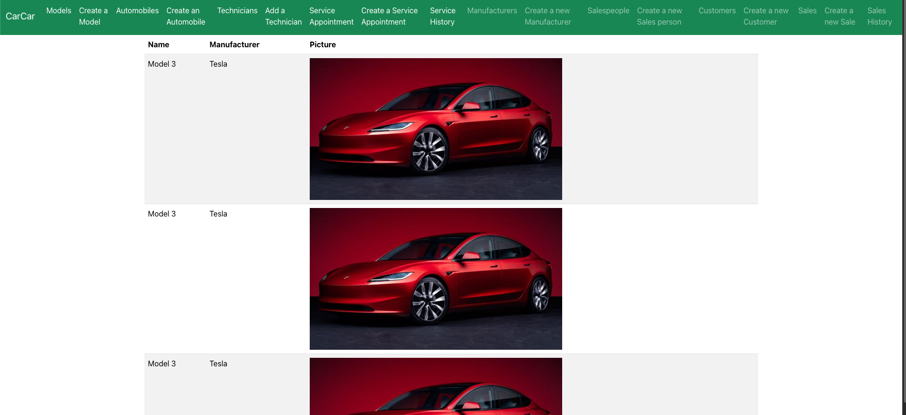with manufactures and models available to populate the dropdown menu to be selected, you can create the automobile with vin number assign to it. You can visit the auto list to see all created autos
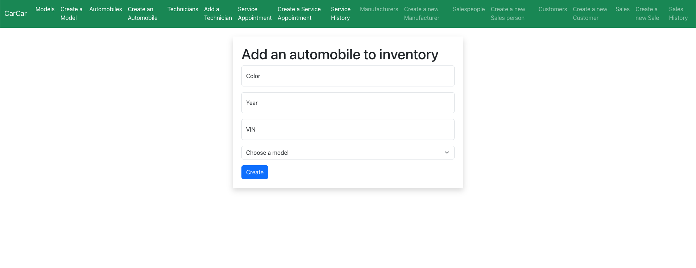 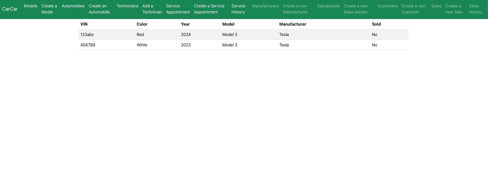after all the set up for the cars are done, we can move on to the people aspects, the sales people, the customers and the technicians. First, let's start with creating the sales person. You will need to set she/he up with their first, last names and form a employee id with alphabets or digits. The available salespeople can be viewed in the salespeople list
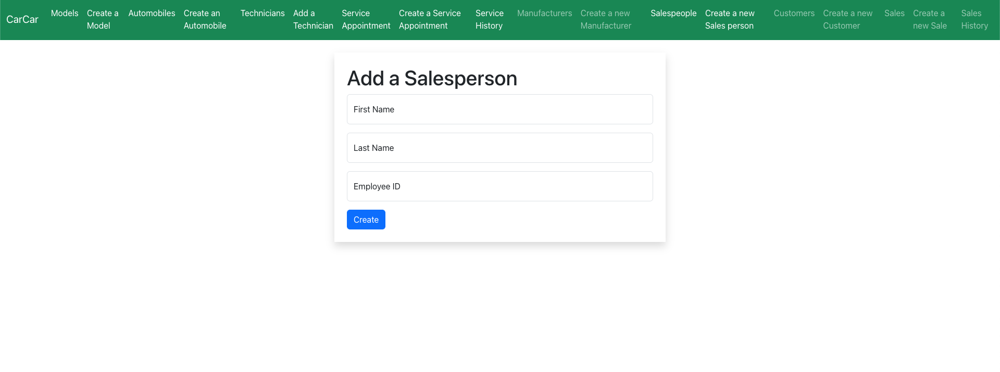 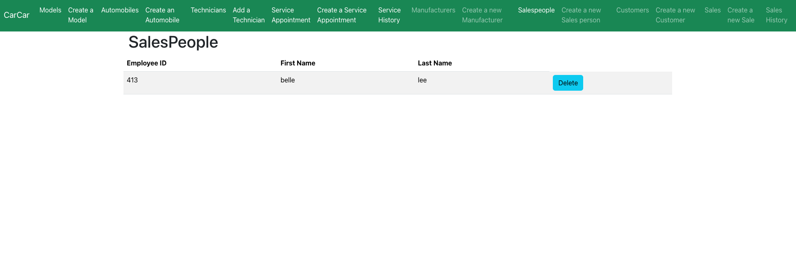with salespeople ready to serve, now you can go and add in new customers for the salespeople to work with. The customers adding will need their first name, last name, also their phone numbers and address. The customers on file will be listed in the customers list
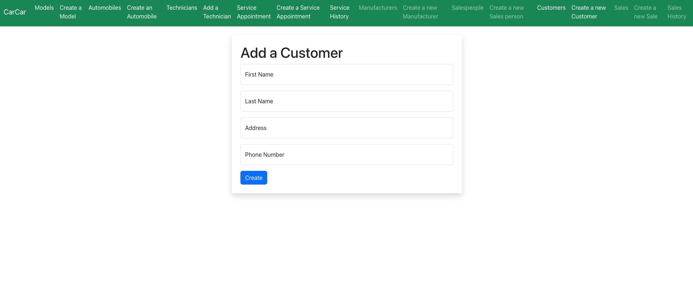 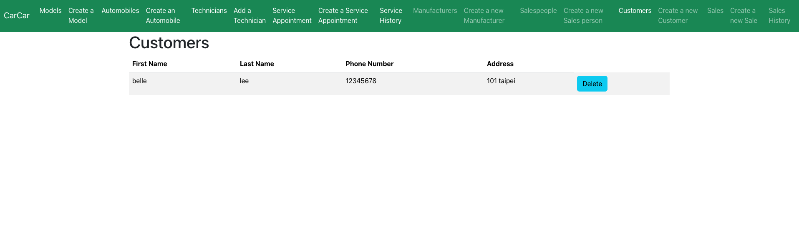now with all the members requires to make a sale, we can start adding new sale. The form has 4 fields to input, the vin, salesperson and customers are dropdown menus which shows the options which we have created in prior, only the price box is an infill, which open the opportunities for price negotiation :P. Completed sales will be documented and shown in the sales list for review, the list gives you an option to delete the sale if needed
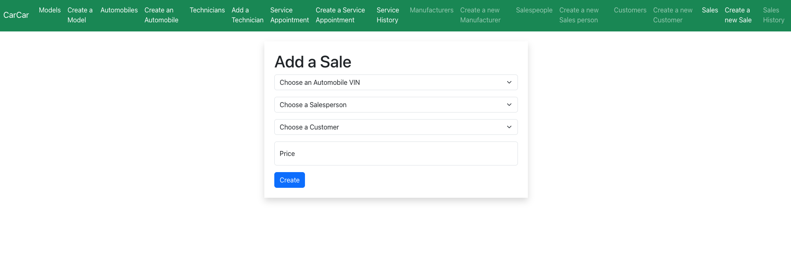 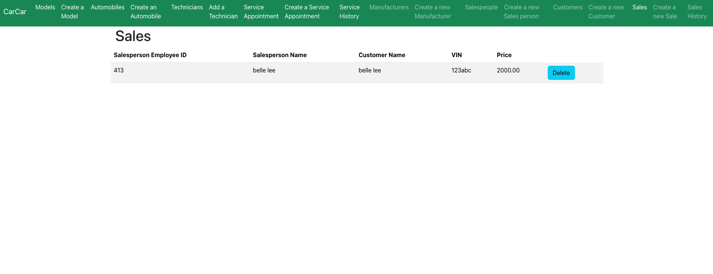with sales completed and filed, we can go to the salesperson history page, this page can help filter out the sales history of a certain salesperson, just by selecting the salesperson from the dropdown menu provided, their sales list will be presented below
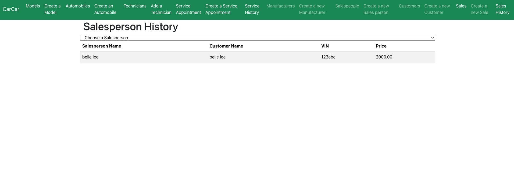after the sale is done, this application also provide the service to manage after sale, First we need to start by adding/creating the technician needed for the after-service. Similar to creating a salesperson, to create a technician we also need their first name, last name and an employee ID with alphabets, digits or both. The technicians on file will also be shown in the technician list for later management or selection
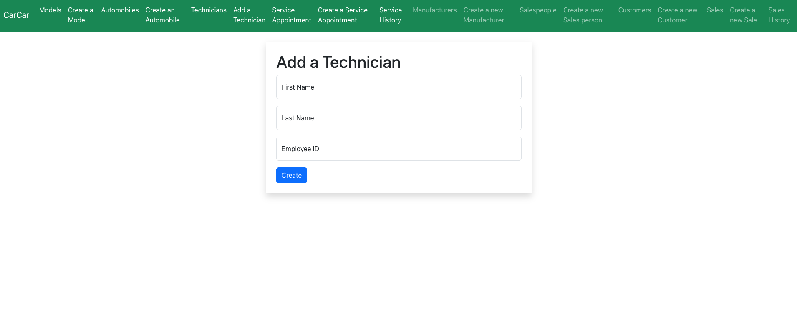 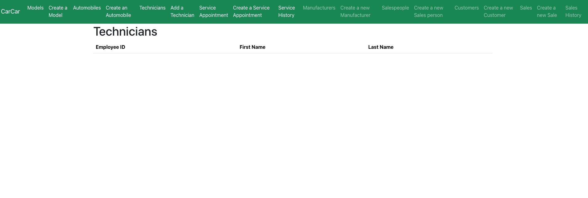with technician on board and documented, we can start creating appointment of the service. The service set up will need the vin of the specific vehicle, the date of the appointment, the technician and the reason for the service. Since there is possibility that the customers and vehicle for the service did not visit or come from the company "CarCar, therefore only the technician for the service can be chosen from a dropdown menu, the other two fields are input boxes.
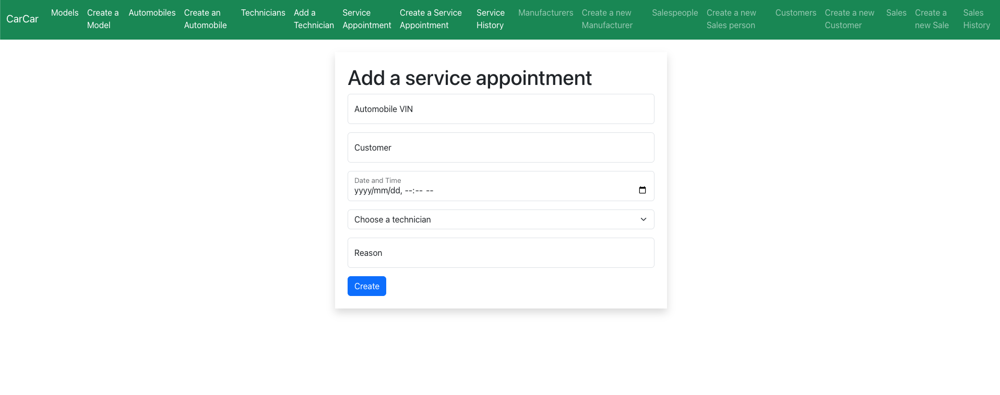 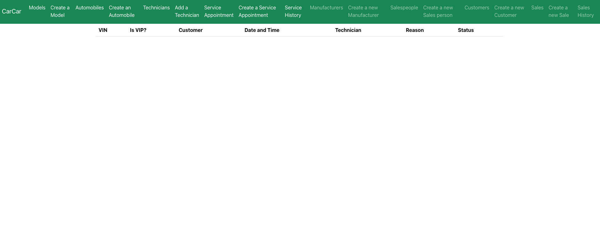like salesperson, the technicians also has a page for filtering out the service list with specific technician
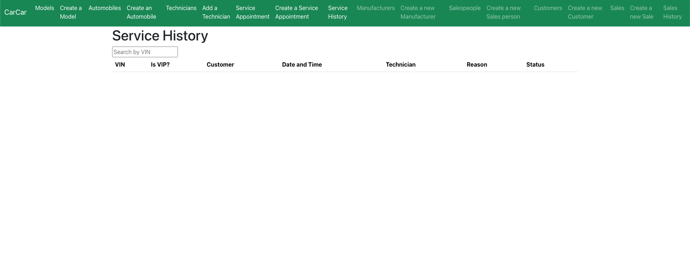- © Untitled
- Design: HTML5 UP